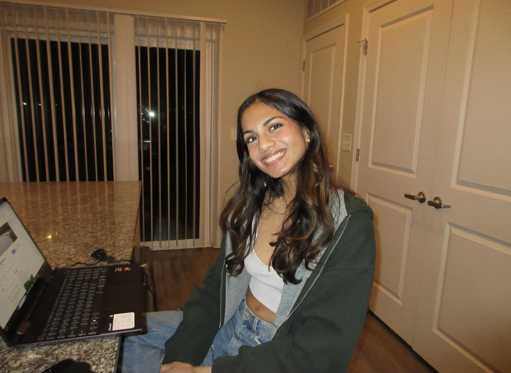

Tanu Sakaray
Outreach Chair
"I joined WIC in my freshman year because I wanted a community in my male-dominated major. My friends were already involved and loved it, so I decided to check it out—and I ended up loving it too. It's such a welcoming space where you can really connect with other women, and now we're focusing more on professional development, which I'm really excited about!"